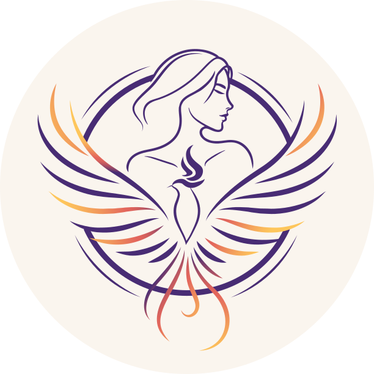

Escucha sin juicio
Un lugar para hablar de lo vivido, sentirse acompañada y comprobar que no estás sola.
Una comunidad de +380 mujeres en siete países que se acompañan, aprenden y se fortalecen juntas.
El enlace abre un grupo de WhatsApp. Tu participación es confidencial.
Amiga No Estás Sola es un grupo de apoyo creado por la psicóloga Erika Caro. Acompaña a mujeres que han vivido violencia de pareja y otras formas de violencia, e impulsa su educación, su emprendimiento y su salud mental.
Nacimos como un grupo de apoyo 100 % virtual y hoy somos una comunidad de +380 mujeres de Colombia, México, Ecuador, Perú, Argentina, Venezuela y Chile. Aquí cada integrante encuentra un espacio seguro para expresar lo que siente, aprender de profesionales que donan su tiempo y contar con el apoyo de otras mujeres.
Creemos que cada mujer lleva dentro un fuego capaz de transformar su vida, y nuestro trabajo como colectivo es acompañarla mientras lo enciende.
Un lugar para hablar de lo vivido, sentirse acompañada y comprobar que no estás sola.
Talleres virtuales dictados por profesionales voluntarios que donan una hora de su tiempo.
Herramientas para el emprendimiento femenino como camino de crecimiento y empoderamiento.
En enero, Erika Caro creó un grupo de WhatsApp con seis mujeres. La idea nació de una necesidad que veía en familiares y amigas: tener dónde expresar lo que sentían frente a la violencia de pareja y otras violencias que habían vivido. Así empezaron los talleres virtuales de una hora cada semana.
El grupo creció y, para ofrecer un acompañamiento más completo, se sumaron psicólogas, psicólogos y profesionales de otras áreas. Cada una dona una hora de su tiempo para enseñar temas clave del empoderamiento femenino.
Superamos las 240 integrantes, con mujeres de siete países de Latinoamérica.
Somos +380. Lo que empezó como un grupo de seis mujeres es hoy una red que se acompaña, aprende y crece unida.
Empoderar a las mujeres mediante el acceso a educación, emprendimiento y salud mental, en un espacio seguro donde puedan aprender, crecer y fortalecerse emocionalmente.
Ser líderes en la transformación positiva de la vida de las mujeres: una red sólida de mujeres empoderadas que inspiren y apoyen a otras, con acceso equitativo a educación, emprendimiento y salud mental.
Comprender y sentir con sinceridad las experiencias de las mujeres. Escuchamos sin juzgar y acompañamos cada historia con cuidado.
Con cada taller y cada conversación buscamos que las mujeres reconozcan su valor y confíen en su capacidad de transformar su vida.
Valoramos la diversidad y cuidamos un espacio de dignidad donde caben mujeres de distintos países e historias.

Psicóloga con especialización en Neuropsicología y Educación
Mi trayectoria se ha centrado en el tratamiento de condiciones como la ansiedad, la depresión, la desregulación emocional, la dependencia emocional y el trastorno de estrés postraumático.
Trabajo desde el enfoque Cognitivo Conductual y técnicas de tercera generación (como ACT y DBT), brindando una atención empática, humanizada y personalizada. Para mí, cada persona es única y merece un acompañamiento adaptado a sus necesidades.
Además, lidero el grupo de apoyo Amiga, no estás sola, un espacio seguro donde promovemos el empoderamiento femenino a través del amor propio y la comprensión mutua.
El podcast de Amiga, no estás sola lleva las conversaciones del colectivo más allá del grupo: episodios sobre amor propio, dependencia emocional y cómo volver a confiar en ti.
Abrir en SpotifyEs un grupo de apoyo 100 % virtual para mujeres, creado en enero de 2022 por la psicóloga Erika Caro. Acompaña a mujeres que han vivido violencia de pareja y otras formas de violencia, e impulsa su educación, su emprendimiento y su salud mental. Hoy somos una comunidad de +380 mujeres en siete países de Latinoamérica.
Erika Caro es psicóloga con especialización en Neuropsicología y Educación, y la fundadora de Amiga, no estás sola. Trabaja desde el enfoque cognitivo conductual y técnicas de tercera generación como ACT y DBT, acompañando procesos de ansiedad, depresión, desregulación emocional, dependencia emocional y estrés postraumático. Conoce más sobre Erika Caro.
Entras por el enlace del grupo de WhatsApp. Puedes unirte cuando quieras, desde tu teléfono o computador, y participar a tu ritmo.
No. Los talleres son virtuales, gratuitos y duran una hora cada semana. Los dictan profesionales voluntarios que donan su tiempo.
Desde cualquier país. La comunidad es 100 % virtual y hoy reúne a mujeres de Colombia, México, Ecuador, Perú, Argentina, Venezuela y Chile.
Sí. Tu participación es confidencial. Este es un espacio seguro para hablar de lo vivido, con escucha sin juicio y respeto por cada historia.
Temas clave del empoderamiento femenino: amor propio, dependencia emocional, salud mental y bienestar emocional, educación y emprendimiento femenino. El podcast lleva esas conversaciones más allá del grupo y está disponible en Spotify.
No. El grupo es un espacio de acompañamiento entre mujeres y no reemplaza la atención en salud mental ni los servicios de emergencia. Si estás en peligro en Colombia, llama a la línea 155 (orientación a mujeres, gratuita, 24 horas) o al 123 (emergencias). En otros países, llama al número de emergencias local. Aquí están las líneas de ayuda.

Los talleres son virtuales, gratuitos y de una hora cada semana. Entras cuando quieras, participas a tu ritmo y encuentras a otras mujeres que entienden lo que vives.
«Si estás pasando por un momento difícil, recuerda: amiga, no estás sola.»